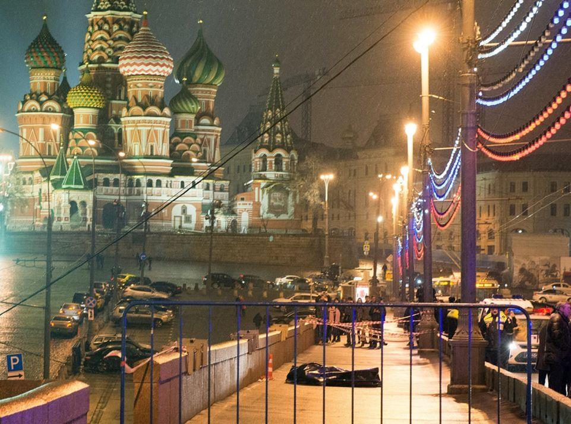
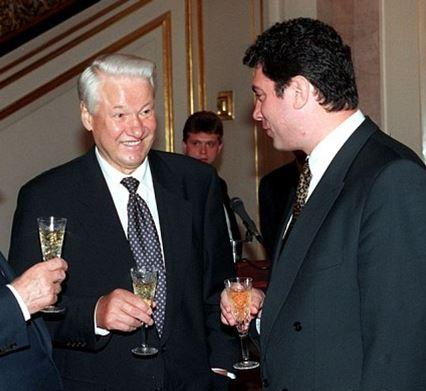
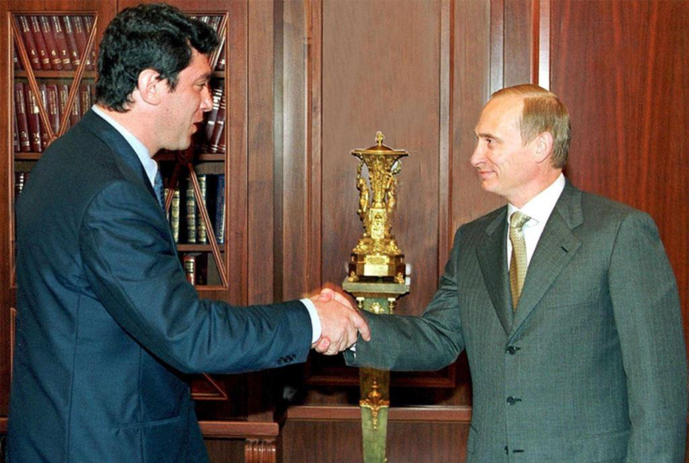
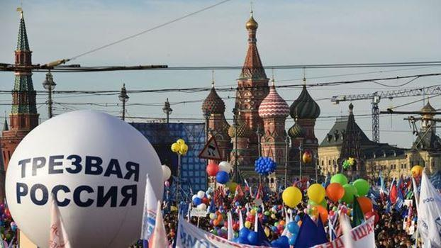
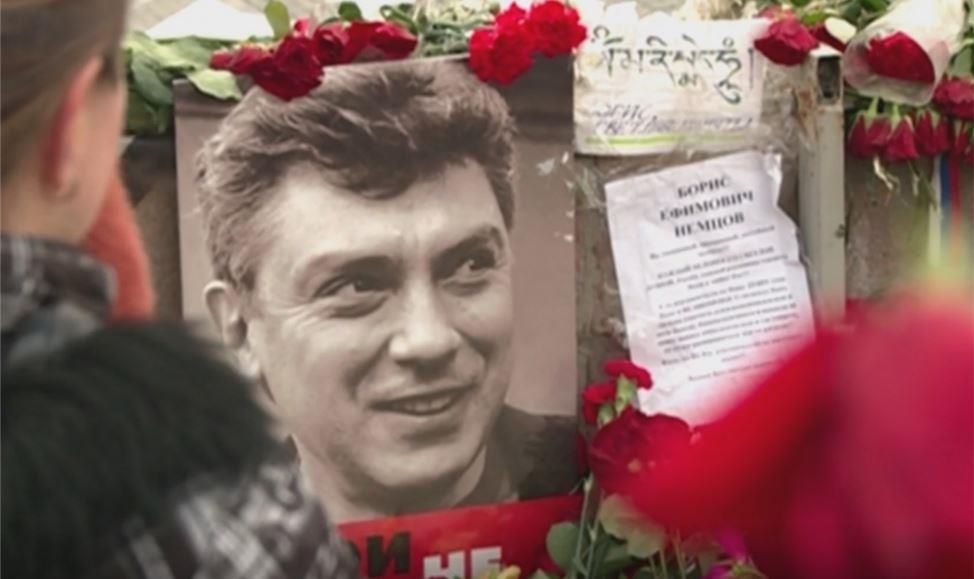

Peu de temps avant la pandémie, l'intelligentsia libérale de Moscou a effectué son pèlerinage annuel. Le jour de l'assassinat de Boris Nemtsov (27 février), un rassemblement de deuil a eu lieu sur le pont Bolchoï-Moskvoretsky. À cet endroit, le politicien a été abattu en 2015 alors qu'il faisait une promenade tardive avec sa jeune maîtresse ukrainienne.
Les fans de Boris Nemtsov demandent même de renommer le vieux pont en « pont Boris Nemtsov ».
L'image médiatique de Nemtsov est un opposant, un « rebelle ». Il a été membre et cofondateur du “Conseil de coordination de l'opposition”. Mais c'est une grande question éthique: peut-on qualifier d'« opposition » un politicien qui était déjà au pouvoir, au sommet, et qui, lorsqu'il était au pouvoir, s'est suffisamment discrédité ? Le médecin dira : comme tout le monde le sait, j'ai mal traité les patients. Mais ramenez-moi à la table d'opération ! En politique aussi, il n'y a pas de seconde chance pour la confiance.
L'appareil politique de Boris Eltsine est toujours rappelé avec antipathie. Ce gouvernement a partagé entre un cercle restreint de personnes tout le patrimoine de l'EX – URSS – l'industrie, les minéraux, etc. La plupart de la population était en dessous du seuil de pauvreté-et c'était la politique consciente du cabinet de Gaïdar.
Dans cette équipe, Nemtsov était vice-Président du Gouvernement de la Fédération de Russie, puis vice-président de la Douma d'État de l'Assemblée fédérale de la Fédération de Russie.
À un très jeune âge, Nemtsov a été élevé à l'Olympe politique. Avec le changement de pouvoir, Boris Nemtsov est tombé de l'Olympe. La première fois qu'il a essayé d'entrer dans l'Équipe de Poutine. Plus tard, il a essayé de toutes les manières possibles de désavouer cette tentative.

Boris Nemtsov, leader du parti de l'Union des forces de droite, avec le président Vladimir Poutine, en juillet 2000
Mais pour Nemtsov, il n'y avait pas de place dans l'Équipe de Poutine. À partir de ce moment – à 15 ans de vie – il a rejoint les rangs de l'opposition. Sa dynamique politique a été-vers le bas, vers le bas et vers le bas. Il a dirigé des associations politiques de plus en plus petites et de plus en plus marginalisées-principalement de taille naine.
Lors des événements du retour de la Crimée, Boris Nemtsov a pris une position anti-russe, qu’il renouvèlera à Novorossia.
« Si j'étais président, la Crimée deviendrait ukrainienne », a déclaré Nemtsov. Il a également qualifié le retour de la Crimée de « capture » et l'a qualifié d'« illégal ». Dans le même temps, le politicien a ignoré le fait que l'événement a été précédé par un renversement illégal et sanglant du pouvoir légitime à Kiev.
Mais la popularité de Nemtsov allait-elle augmenter avec des événements ukrainiens ? En Russie-non, parce que la majorité absolue de la population russe a salué le retour de la Crimée et sympathisé avec les habitants de Novorossia.
À l'étranger? Nemtsov était, pour les journalistes étrangers, l'un des nombreux politiciens anti-russes de gauche. Pourtant son public était resté minoritaire à gauche. L'une des dernières associations auxquelles il a participé est le parti nain du PARNAS. Mais là encore Nemtsov fut un perdant.
Et puis il y a un événement qui a beaucoup attiré l'attention des médias étrangers sur la personnalité de Nemtsov, augmentant considérablement sa notoriété. Mais ce ne fut, malheureusement pour lui, pas de son vivant mais par son assassinat, non loin du Kremlin ! Le symbole est rêvé et l’occasion trop belle pour l’opposition libérale.
Il ne reste plus qu’à la presse occidentale à en faire un héros de l’opposition à Poutine, un martyr.
Bien qu’il soit peu probable que Poutine se souvienne de qui était Nemtsov avant le meurtre, il est contraint, après ce crime, de prendre le contrôle de l'enquête sur cet étrange assassinat. Oui, Nemtsov a causé beaucoup de problèmes à Poutine mais ce n’est assurément pas de son vivant.
Pauvre Boris Nemtsov! Il se considérait comme un joueur d'échecs. Mais il était, en fait, un pion dans le jeu de quelqu'un d'autre. Et le vrai joueur a décidé : c'est un mouvement d'échecs, grâce auquel un pion (vivant) peut devenir une reine (morte).
Après le Maidan à Kiev, nous avons vu en action la technologie d'apporter les « sacrifices sacrés » nécessaires pour fomenter les émeutes. Il a déjà été prouvé que de nombreux morts enterrés sous le nom de « centurie céleste » sont en fait morts de leur belle mort bien loin de Kiev.
L'enquête a établi les auteurs du meurtre. La question de savoir qui est derrière cela est encore ouverte.
Reste à définir « is fecit cui prodest » ?
L'opposition libérale a désormais reçu un symbole, son martyr, sa bannière.
Un autre rassemblement à la mémoire de Nemtsov semble être le dernier événement politique à Moscou avant l'épidémie. C'est curieux et un peu indécent.
Partager cette page